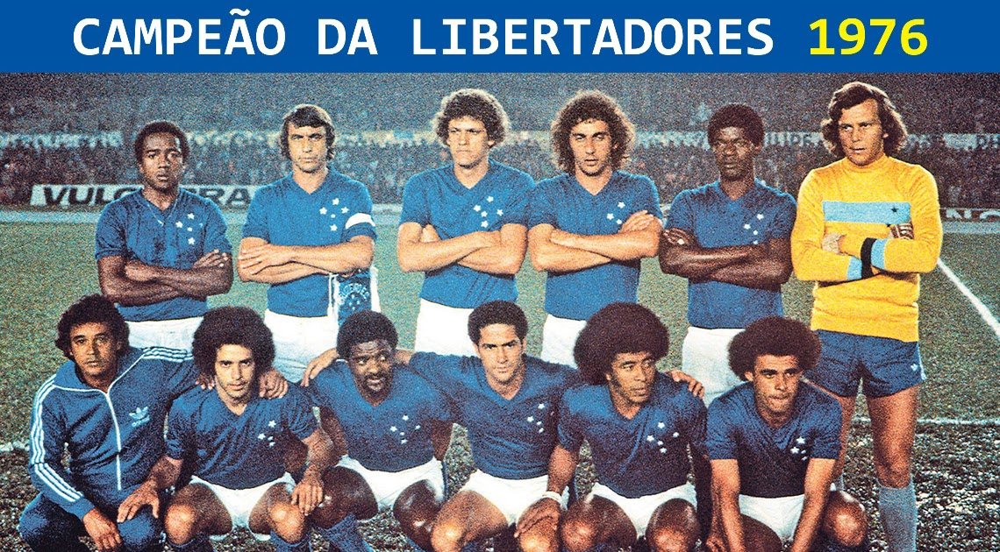
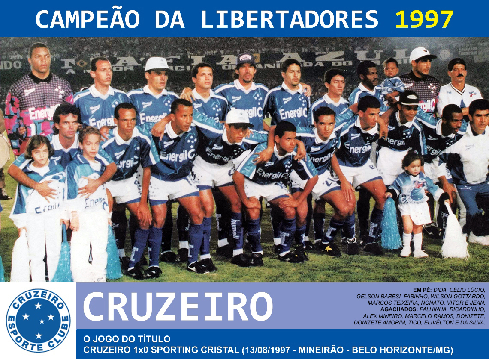
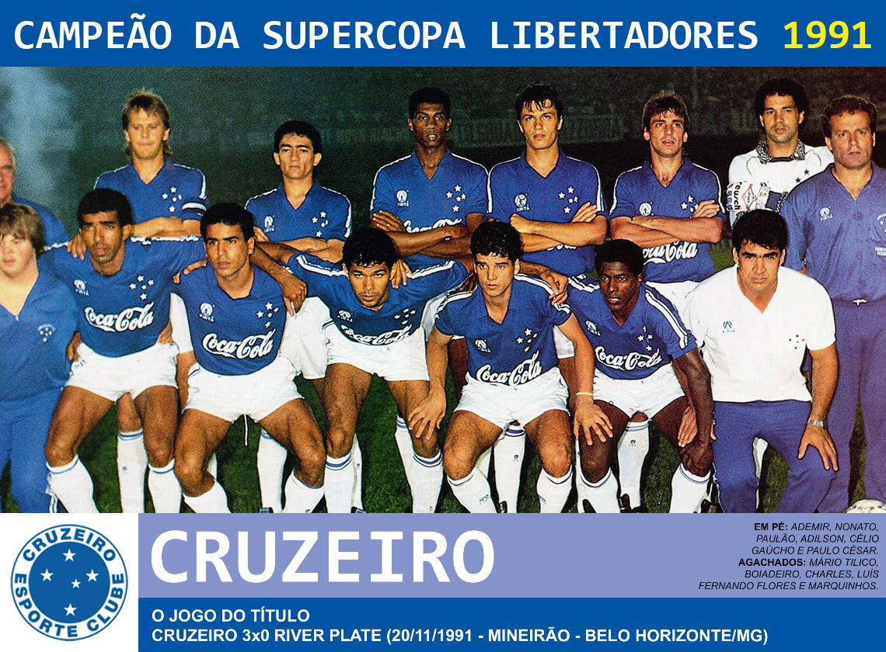
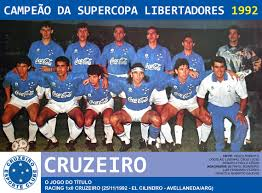
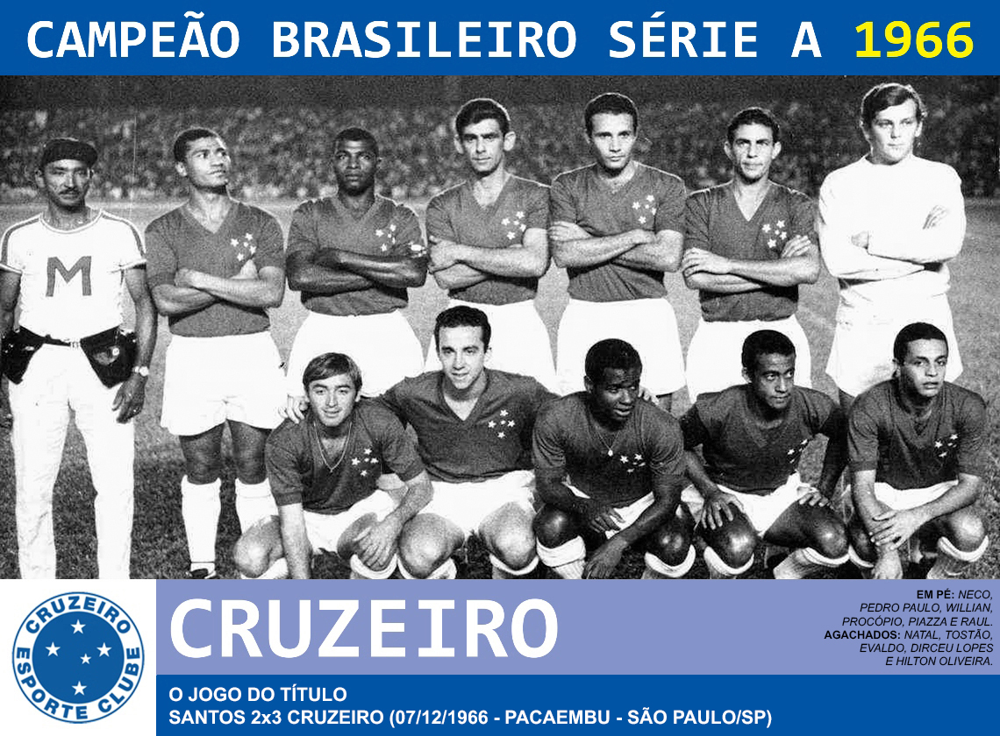
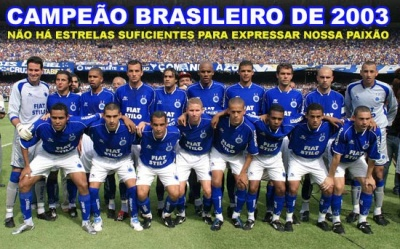
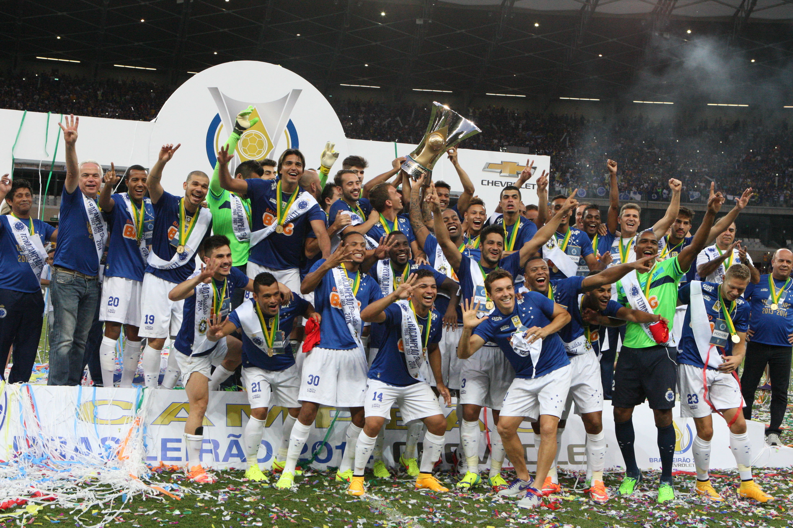
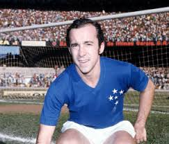
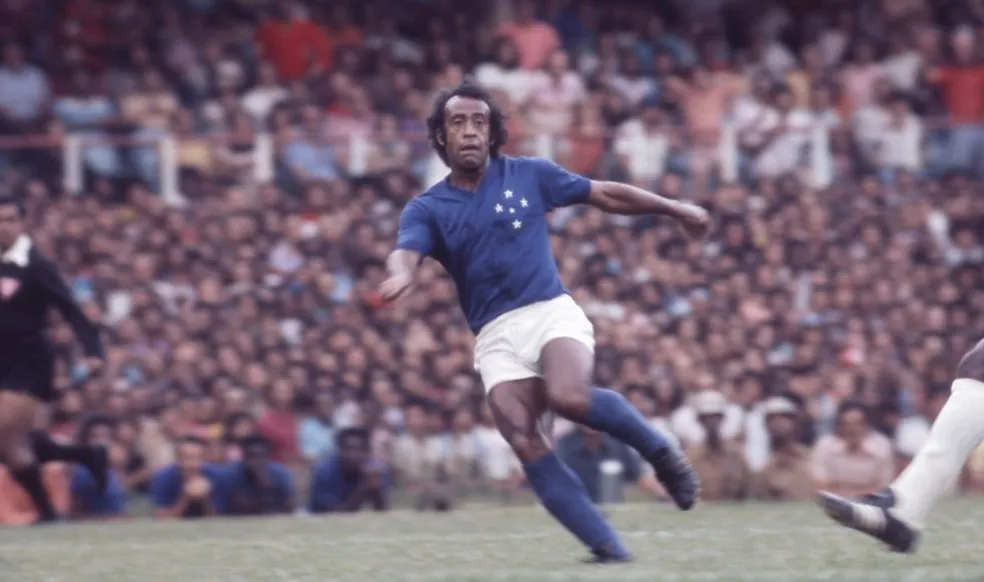

Voltar ao início

CRUZEIRO ESPORTE CLUBE
-
Cruzeiro Esporte Clube, carinhosamente conhecido como Raposa ou Celeste, é uma das maiores potências do
futebol brasileiro e sul-americano. Fundado em 2 de janeiro de 1921, inicialmente como Palestra Itália,
mudou de nome em 1942 para Cruzeiro Esporte Clube em homenagem à constelação do Cruzeiro do Sul.
PRINCIPAIS TÍTULOS INTERNACIONAIS
-
2x Copa Libertadores (1976, 1997), 2x Supercopa Libertadores (1991, 1992), 1x Recopa Sul-Americana (1998)





PRINCIPAIS TÍTULOS NACIONAIS
-
Nacionais: 4x Campeonato Brasileiro (1966, 2003, 2013, 2014) e recorde de 6 taças da Copa do Brasil



Temporada 2025
-
O clube iniciou a temporada com o técnico Leonardo Jardim, assumindo em fevereiro – após passagem de
Fernando Diniz e Wesley Carvalho.
-
Em 2025, o Cruzeiro disputou:
- Campeonato Mineiro (chegou às semifinais)
- Brasileirão Série A (2º colocado até o momento)
- Copa do Brasil (oitavas de final até o momento)
- Copa Sul-Americana (parou na fase de grupos)
- Com Kaio Jorge como artilheiro do time (13 gols)
CRAQUES HISTÓRICOS
- Tostão – ídolo da Seleção Brasileira de 1970

- Dirceu Lopes – um dos maiores meias da história do clube

- Ronaldo Fenômeno – revelado pelo clube aos 16 anos

Entre outros
Seguir para proxima Página